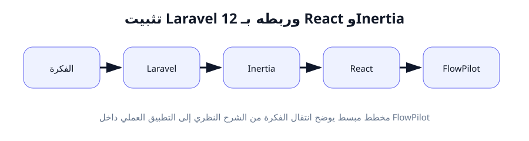
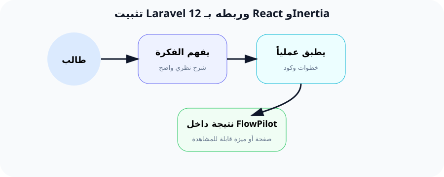

تثبيت Laravel 12 وربطه بـ React عبر جسر Inertia.js
"اليوم هو اليوم الذي يولد فيه مشروع FlowPilot على جهازك. سننتقل من الصفر إلى أول صفحة تفاعلية!"
لماذا هذا الدرس مهم؟
في الدرس السابق، جهزنا جميع الأدوات. الآن حان وقت استخدامها لبناء شيء حقيقي.
هذا الدرس هو أهم درس في الأسبوع الأول، لأنه سينتج عنه مجلد المشروع الحقيقي الذي سنعمل عليه طوال الدورة. بعد هذا الدرس، سيكون لديك تطبيق ويب يعمل فعلاً على جهازك - وليس مجرد ملفات نظرية.
سنتعلم كيف ننشئ مشروع Laravel باستخدام Composer، ثم نضيف له واجهة React عبر تقنية اسمها Inertia.js. هذه التقنية حديثة وتستخدمها شركات كبيرة لأنها تجمع بين قوة Laravel وسرعة React بطريقة ذكية.
ما هو الـ Stack التقني؟ وماذا يعني كل مصطلح؟
ما هو Laravel 12؟
Laravel هو "إطار عمل" (Framework) للغة PHP. كلمة "إطار عمل" تعني مجموعة من الأدوات والقوانين الجاهزة التي تنظم طريقة كتابة الكود. بدلاً من أن تكتب كل شيء من الصفر (الاتصال بقاعدة البيانات، الحماية من الاختراق، إدارة الجلسات)، Laravel يوفر لك كل هذا جاهزاً.
تخيل أنك تريد بناء سيارة. يمكنك أن تصنع كل قطعة بنفسك (عجلات، محرك، مقاعد...). أو يمكنك شراء "هيكل جاهز" للسيارة وتعديله حسب رغبتك. Laravel هو هذا الهيكل الجاهز لتطبيقات الويب.
Laravel 12 هو أحدث إصدار (في وقت كتابة هذه الدروس). كل إصدار جديد يأتي بتحسينات في الأداء والأمان.
ما هو React؟
React هي "مكتبة" (Library) لبناء واجهات المستخدم. طورتها شركة Facebook. React تسمح لك ببناء واجهات تفاعلية سريعة، تشبه تطبيقات الموبايل في سرعتها وسلاسة استخدامها.
الفرق بين Laravel و React: Laravel يعمل في الخلفية (يتعامل مع قاعدة البيانات والمستخدمين)، بينما React يعمل في المقدمة (ما يراه المستخدم وينقر عليه).
ما هو Inertia.js؟
Inertia.js هو "جسر" (Bridge) يربط Laravel بـ React. عادةً، إذا أردت استخدام Laravel مع React، كان عليك بناء "API" (واجهة برمجية) معقدة. Inertia يلغي هذه الحاجة.
كيف يعمل؟ عندما يطلب المستخدم صفحة، Laravel يجهز البيانات، ثم يمررها إلى Inertia، الذي يرسلها إلى React لعرضها. كل هذا يحدث بسرعة ودون تعقيد.
مصطلحات مهمة ستراها كثيراً:
- Front-end (الواجهة الأمامية): الجزء الذي يراه المستخدم ويتفاعل معه. (React + CSS)
- Back-end (الخلفية): الجزء المخفي الذي يدير المنطق والبيانات. (Laravel + PHP)
- Full-stack (المكدس الكامل): مطور يفهم كلاً من الواجهة والخلفية. هذا ما ستصبح عليه!
- SPA (Single Page Application): تطبيق بصفحة واحدة. يعني أن المستخدم لا يحتاج لإعادة تحميل الصفحة عند التنقل - كل شيء يحدث بسلاسة.
مثال من الواقع: "المطعم الذكي"
لنشرح العلاقة بين Laravel و React و Inertia بمثال بسيط:
👨🍳
Laravel = المطبخ
يجهز الأطباق (البيانات) ويتأكد من جودتها
🧑💼
Inertia = النادل
يأخذ الطلب، يذهب للمطبخ، ويعود بالطبق
🍽️
React = طاولة الزبون
المكان الذي يظهر فيه الطعام بشكل جميل
في التطبيقات التقليدية (بدون Inertia)، كنت تحتاج لـ "مطعمين منفصلين": واحد للمطبخ وآخر للصالة، ويجب بناء جسر معقد بينهما. مع Inertia، كل شيء في مطعم واحد متكامل، والنادل (Inertia) يقوم بكل العمل بسلاسة!
كيف يخدم هذا الدرس مشروع FlowPilot؟
هذا هو الدرس الذي سينتج عنه مجلد flowpilot على جهازك. هذا المجلد سيحتوي على كل ملفات المشروع: ملفات Laravel (app/, config/, routes/)، وملفات React (resources/js/Pages/).
من الآن فصاعداً، كل درس سيعتمد على هذا المجلد. سنضيف إليه ملفات جديدة، نعدل فيه، ونطوره حتى يصبح تطبيق FlowPilot كاملاً.
هذا هو "قلب" المشروع. لا تخسره، واحرص على عمل نسخة احتياطية منه بعد كل درس!
التطبيق العملي خطوة بخطوة
الخطوة 1: إنشاء مشروع Laravel جديد
الهدف: طلب من Composer إنشاء مشروع Laravel 12 باسم flowpilot.
قبل البدء: تأكد أنك في المجلد الذي تريد إنشاء المشروع فيه. مثلاً، يمكنك إنشاء مجلد "projects" على سطح المكتب والعمل فيه.
# الأمر الأول: إنشاء المشروع (قد يستغرق دقيقة أو اثنتين)
composer create-project laravel/laravel flowpilot
# بعد الانتهاء، ادخل إلى مجلد المشروع
cd flowpilot
شرح الأمر الأول كلمة كلمة:
composer: اسم البرنامج (مدير حزم PHP).create-project: أمر يقول لـ Composer "أنشئ مشروعاً جديداً".laravel/laravel: اسم الحزمة التي نريد تثبيتها. "laravel" هو اسم المشروع في Packagist، "laravel" هو اسم الحزمة.flowpilot: اسم المجلد الذي سنضع فيه المشروع.
بعد تنفيذ الأمر، سترى Composer يقوم بتحميل Laravel ومكتباته. قد تظهر أشرطة تقدم - هذا طبيعي، فقط انتظر.
الخطوة 2: تثبيت Breeze (قالب البداية)
الهدف: استخدام Laravel Breeze وهو قالب جاهز يضيف Inertia و React لمشروعنا تلقائياً.
ملاحظة مهمة: Breeze هو "قالب بداية" (Starter Kit) طورته Laravel. وظيفته إعداد نظام تسجيل دخول جاهز مع Inertia و React. بدلاً من تركيب كل شيء يدوياً، Breeze يفعل كل شيء بأمر واحد!
# تثبيت Breeze مع خيار React
composer require laravel/breeze --dev
# بعد التثبيت، شغّل أمر النشر
php artisan breeze:install react
شرح الأوامر:
composer require laravel/breeze --dev: نطلب من Composer تحميل حزمة Breeze من Packagist.--dev: تعني أن هذه الحزمة مخصصة للتطوير فقط، ولن نستخدمها في الإنتاج (Production).php artisan breeze:install react:php artisanهو واجهة أوامر Laravel. نطلب منه تشغيل أمر Breeze لتثبيت واجهة React.
⚠️ هذا الأمر سيقوم تلقائياً بما يلي:
- • تثبيت Inertia.js جانب السيرفر.
- • تثبيت React و Inertia جانب الواجهة عبر NPM.
- • إعداد ملفات الصفحات الأولى.
- • إعداد نظام تسجيل الدخول.
الخطوة 3: تشغيل الخادمين (Laravel و React)
الهدف: تشغيل خادم Laravel وخادم تطوير React معاً لرؤية أول صفحة.
مهم جداً: مشروعنا يحتاج إلى "نافذتي Terminal" مفتوحتين في نفس الوقت. واحدة لتشغيل Laravel، وواحدة لتشغيل React (Vite).
# النافذة الأولى: خادم Laravel
php artisan serve
# النافذة الثانية: خادم Vite (React)
npm run dev
شرح الأوامر:
php artisan serve: يشغل Laravel على http://localhost:8000. هذا هو خادم التطوير المحلي.npm run dev: يشغل Vite (أداة بناء JavaScript الحديثة). Vite يراقب تغييراتك في ملفات React ويحدث المتصفح تلقائياً.
💡 الآن اذهب إلى متصفحك وافتح http://localhost:8000 - يجب أن ترى صفحة Laravel الترحيبية!
الخطوة 4: استكشاف هيكل المشروع (المجلدات المهمة)
الهدف: فهم المجلدات الرئيسية في مشروع Laravel حتى نعرف أين نكتب الكود في الدروس القادمة.
app/
قلب Laravel. يحتوي على منطق التطبيق: Controllers (وحدات التحكم)، Models (نماذج البيانات)، Middleware (الوسائط).
routes/
ملفات المسارات (Routes). تحدد أي رابط يقود لأي صفحة. ملف web.js هو الأهم للمبتدئين.
resources/js/
ملفات الواجهة: React Components و Pages. هذا هو المكان الذي سنعمل فيه أكثر.
config/
إعدادات التطبيق: قاعدة البيانات، البريد، الملفات، والـ API.
database/
ملفات قاعدة البيانات: هيكل الجداول والبيانات التجريبية (migrations, seeders).
package.json
قائمة بجميع مكتبات JavaScript المستخدمة (React، Inertia، Tailwind).
الخطوة 5: إلقاء نظرة على أول صفحة React
الهدف: رؤية كيف تبدو صفحة React داخل مشروع Laravel.
ملف Welcome.jsx هو صفحة الترحيب التي تظهر عند فتح http://localhost:8000. Breeze قام بإنشائها تلقائياً.
افتح الملف: resources/js/Pages/Welcome.jsx
import { Link } from '@inertiajs/react';
export default function Welcome() {
return (
<div className="...">
<h1>FlowPilot</h1>
</div>
);
}
ماذا نرى هنا؟
import { Link } from '@inertiajs/react': نستورد أداة "Link" من مكتبة Inertia لاستخدامها في التنقل بين الصفحات.export default function Welcome(): نعرّف دالة (وظيفة) اسمها Welcome. في React، كل صفحة هي "مكون" (Component).- داخل الدالة، نعيد (return) كود JSX (شبيه HTML) يمثل شكل الصفحة.
شرح تفصيلي لملفات الإعداد الأساسية
ملف routes/web.php (مسار Laravel)
<?php
use Illuminate\Support\Facades\Route;
use Inertia\Inertia;
Route::get('/', function () {
return Inertia::render('Welcome');
});
الشرح سطراً سطراً:
<?php: علامة تفتح كود PHP. كل ملفات Laravel تبدأ بهذه العلامة.use Illuminate\Support\Facades\Route;: نستورد (نستدعي) مكتبة Route من Laravel. "Facades" هي طريقة Laravel لاستخدام الأدوات بسهولة.use Inertia\Inertia;: نستورد مكتبة Inertia.Route::get('/', function () { ... }): نعرّف مساراً (Route).getيعني أن المتصفح يطلب الصفحة عبر HTTP GET.'/'هو الرابط الرئيسي (الصفحة الأولى).function ()هي دالة مجهولة تنفذ عندما يزور المستخدم هذا الرابط.return Inertia::render('Welcome');: بدلاً من إعادة صفحة HTML عادية، نطلب من Inertia أن يبحث عن صفحة React اسمهاWelcomeفي مجلدresources/js/Pages/ويعرضها.
ملف resources/js/app.jsx (نقطة دخول React)
import { createInertiaApp } from '@inertiajs/react';
import { createRoot } from 'react-dom/client';
createInertiaApp({
resolve: name => {
const pages = import.meta.glob('./Pages/**/*.jsx', { eager: true });
return pages[`./Pages/${name}.jsx`];
},
setup({ el, App, props }) {
createRoot(el).render(<App {...props} />);
},
});
هذا الملف يربط Inertia بـ React. يخبر Inertia كيف يجد صفحات React (في مجلد Pages/) وكيف يعرضها في المتصفح. لا تقلق من تفاصيله الآن - ستفهمه أكثر مع الوقت. المهم أن تعرف أن هذا الملف موجود ويعمل.
النتيجة المتوقعة
بعد تنفيذ جميع الخطوات، يجب أن ترى:
-
1
نافذة Terminal (Laravel) تعرض
Server running on http://localhost:8000 -
2
نافذة Terminal (Vite) تعرض
VITE v6.x readyورابط محلي - 3 المتصفح يعرض صفحة Laravel/React الترحيبية (شعار Laravel + روابط)
-
4
مجلد
flowpilotعلى جهازك يحتوي على جميع ملفات المشروع
الأخطاء الشائعة والحلول
1. خطأ: Composer require فشل (مشكلة إنترنت)
السبب: اتصال الإنترنت ضعيف أو Packagist محظور.
الحل: جرب مرة أخرى. إذا استمرت المشكلة، استخدم VPN أو غيّر DNS لسيرفر Google (8.8.8.8).
2. خطأ: 500 Server Error عند فتح المتصفح
السبب: غالباً مشكلة في ملف .env (بيئة التطوير).
الحل: تأكد من وجود ملف .env في مجلد المشروع. إذا لم يكن موجوداً، انسخ .env.example إلى .env. ثم شغّل php artisan key:generate.
3. خطأ: npm run dev لا يعمل (Vite)
السبب: لم تقم بتثبيت مكتبات npm بعد.
الحل: شغّل npm install قبل npm run dev. هذا الأمر يقوم بتحميل كل مكتبات JavaScript المذكورة في package.json.
4. خطأ: "Route [login] not defined"
السبب: تأتي بعض صفحات Breeze مع نظام مصادقة. إذا لم تكمل تثبيت Breeze بالكامل، قد تظهر هذه الرسالة.
الحل: تأكد أنك نفذت جميع أوامر تثبيت Breeze بشكل صحيح. جرب php artisan breeze:install react مرة أخرى.
5. مشكلة: الصفحة تظهر بيضاء أو لا تحمل CSS
السبب: خادم Vite لم يتم تحميله بالكامل أو هناك تعارض في المنافذ (Port).
الحل: تأكد من تشغيل npm run dev في نافذة منفصلة. أعد تحميل الصفحة في المتصفح (Ctrl+F5). إذا استمرت المشكلة، أعد تشغيل الكمبيوتر.
مخططات توضيحية

كيف تترابط Laravel و Inertia و React معاً

تشبيه المطعم الذكي لفهم الـ Stack التقني
ملخص الدرس
ماذا أنجزنا؟
- • أنشأنا مشروع Laravel 12 باسم
flowpilot - • ثبتنا Breeze مع React stack
- • شغّلنا خادمي Laravel و Vite معاً
- • استعرضنا أول صفحة React في المتصفح
مفاهيم تعلمناها
- • Laravel = إطار عمل PHP للخلفية
- • React = مكتبة JavaScript للواجهة
- • Inertia.js = جسر يربط Laravel بـ React
- • php artisan = واجهة أوامر Laravel
الخطوة القادمة
الآن لدينا مشروع يعمل. في الدرس القادم، سنجعل صفحته الأولى جميلة باستخدام Tailwind CSS.